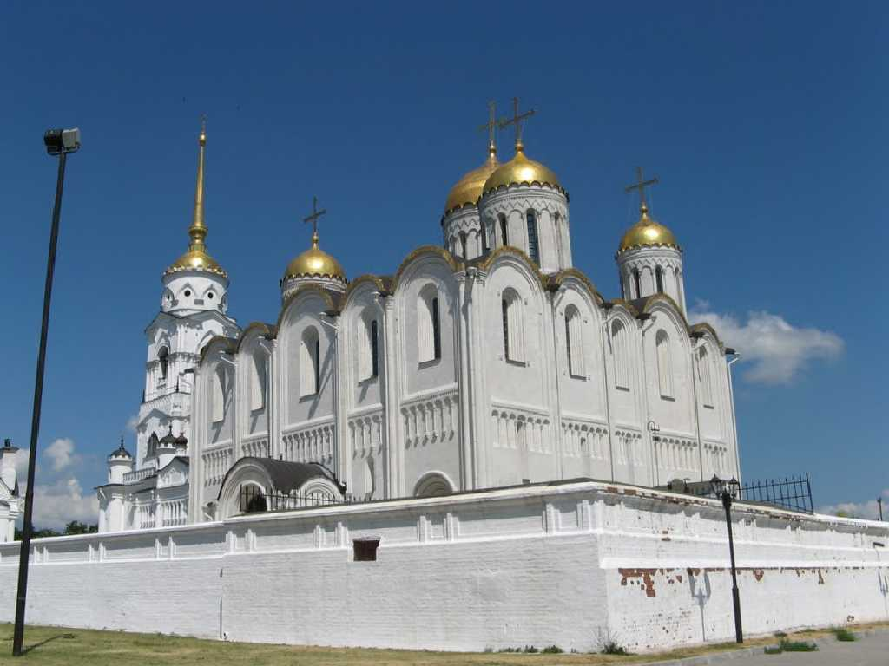
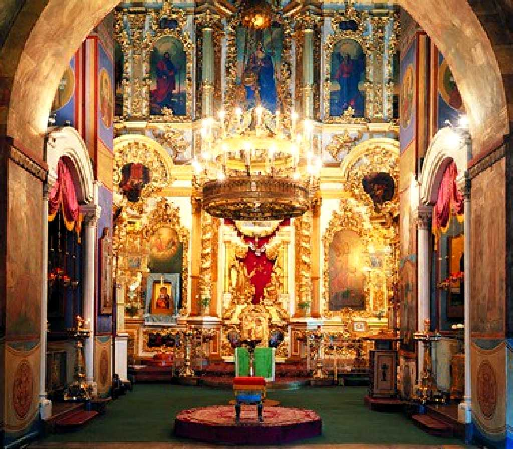
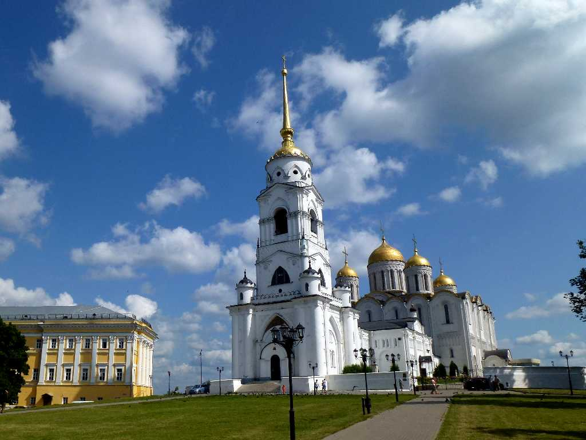
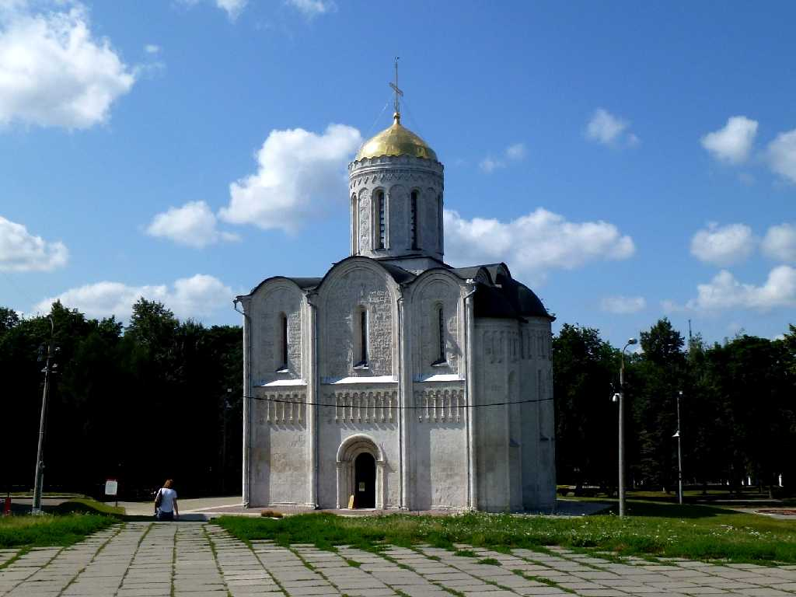
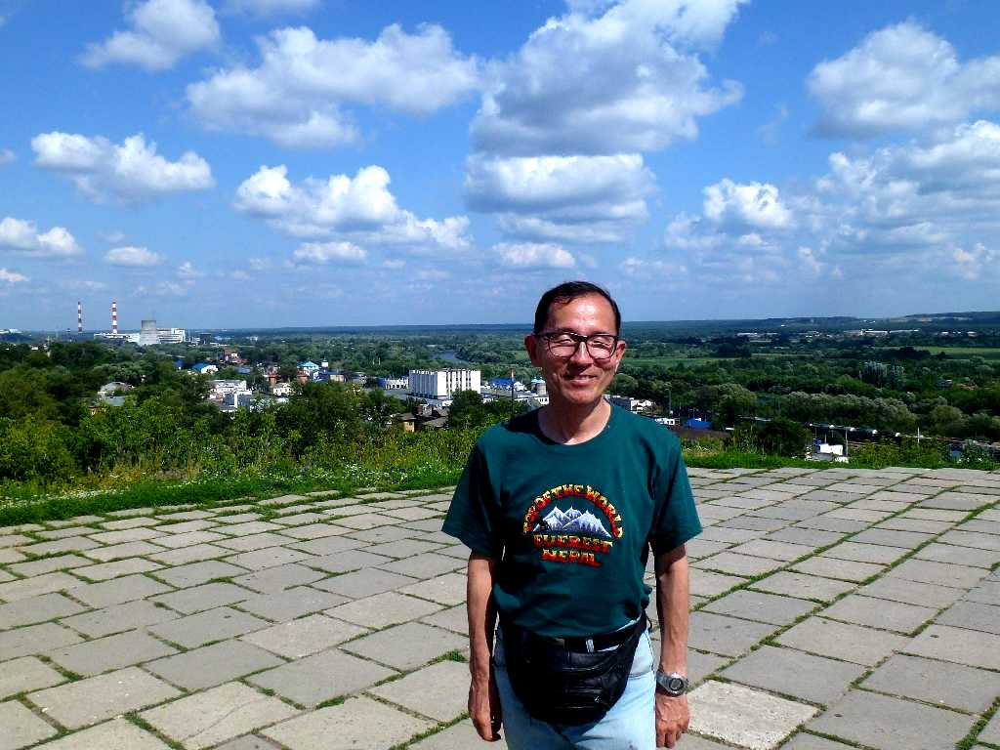
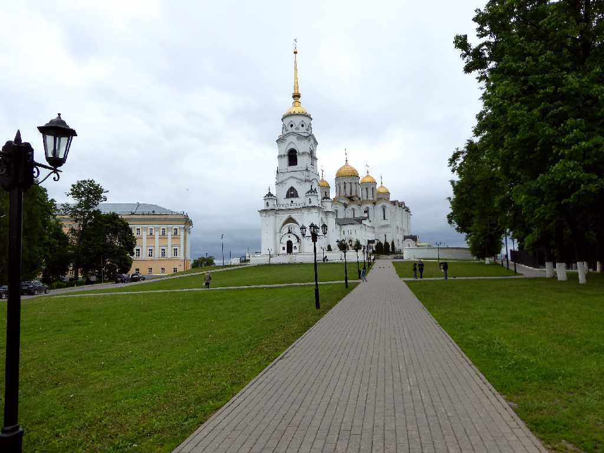
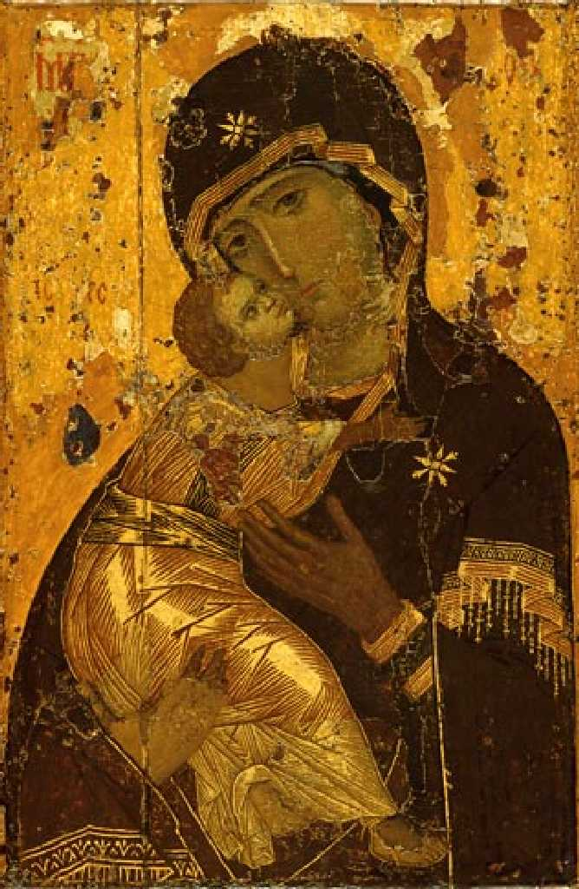
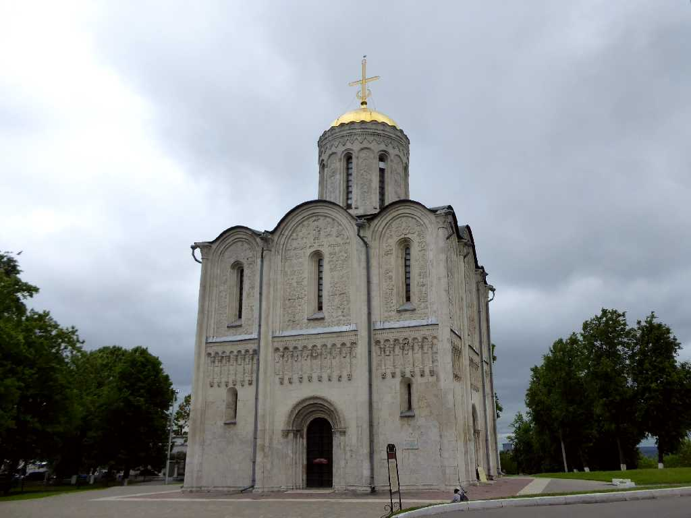
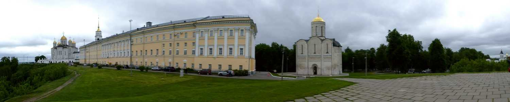

Uspensky Cathedral Vladimir
８０日間世界一周鉄道の旅で１５日目 ウラジーミルの生神女就寝大聖堂

Altar Uspensky Cathedral
１２世紀から１４世紀までウラジーミルスーズダリ公国の首都であったことからロシア正教の総本山であった

Bell Tower Uspensky Cathedral

Demetrius Cathedral
１２世紀に石灰岩で創られた古代ロシア建築様式の聖堂で彫刻が美しい

July 8 2013 Vladimir Station from Cathedral
８０日間世界一周鉄道の旅で９日目(６日前)の午前２時半に停車したシベリア鉄道ロシア１号の最後の停車駅となったウラジーミル駅

Uspensky Cathedral Vladimir
８０日間世界一周鉄道の旅で訪問以来４年ぶりの再訪問

Vladimirskaya in The State Tretyakov Gallery
１１３０年前後に描かれたウラジミールの生神女はロシア正教会で最も有名な聖母マリアのイコンで世界中の正教会で模写され続けられておりモスクワのトレチャコフ美術館で観ることができた

Demetrius Cathedral

July 8 2017 Cathedral